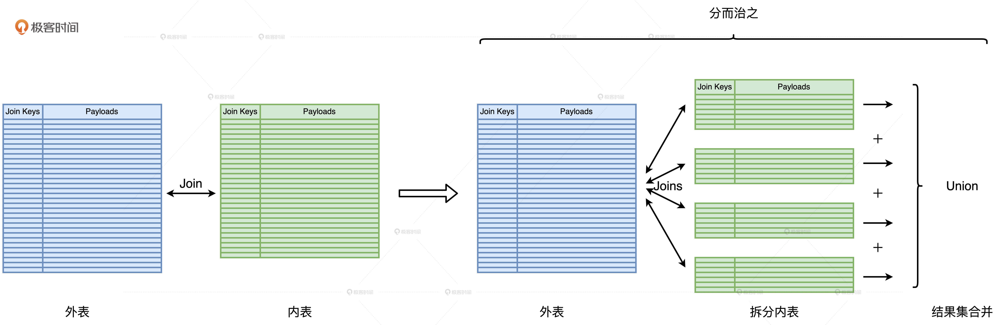
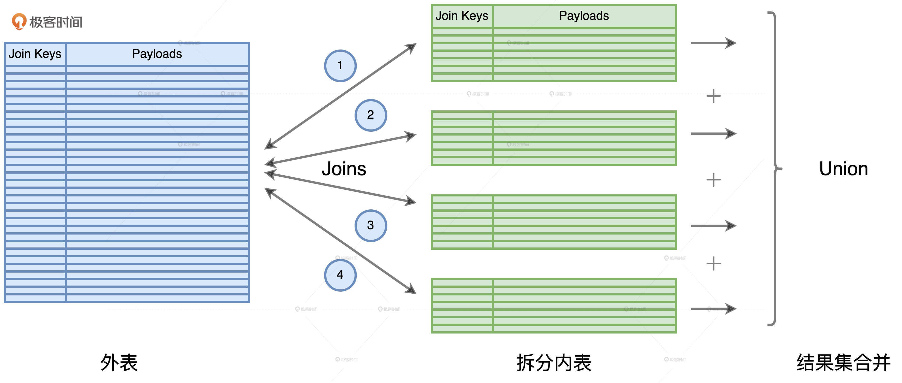
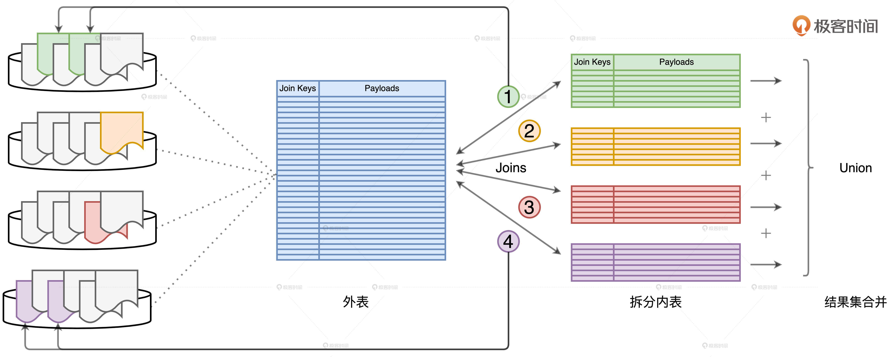

- 00 开篇词 Spark性能调优，你该掌握这些“套路”.md.html
- 01 性能调优的必要性：Spark本身就很快，为啥还需要我调优？.md.html
- 02 性能调优的本质：调优的手段五花八门，该从哪里入手？.md.html
- 03 RDD：为什么你必须要理解弹性分布式数据集？.md.html
- 04 DAG与流水线：到底啥叫“内存计算”？.md.html
- 05 调度系统：“数据不动代码动”到底是什么意思？.md.html
- 06 存储系统：空间换时间，还是时间换空间？.md.html
- 07 内存管理基础：Spark如何高效利用有限的内存空间？.md.html
- 08 应用开发三原则：如何拓展自己的开发边界？.md.html
- 09 调优一筹莫展，配置项速查手册让你事半功倍！（上）.md.html
- 10 调优一筹莫展，配置项速查手册让你事半功倍！（下）.md.html
- 11 为什么说Shuffle是一时无两的性能杀手？.md.html
- 12 广播变量（一）：克制Shuffle，如何一招制胜！.md.html
- 13 广播变量（二）：如何让Spark SQL选择Broadcast Joins？.md.html
- 14 CPU视角：如何高效地利用CPU？.md.html
- 15 内存视角（一）：如何最大化内存的使用效率？.md.html
- 16 内存视角（二）：如何有效避免Cache滥用？.md.html
- 17 内存视角（三）：OOM都是谁的锅？怎么破？.md.html
- 18 磁盘视角：如果内存无限大，磁盘还有用武之地吗？.md.html
- 19 网络视角：如何有效降低网络开销？.md.html
- 20 RDD和DataFrame：既生瑜，何生亮？.md.html
- 21 Catalyst逻辑计划：你的SQL语句是怎么被优化的？（上）.md.html
- 22 Catalyst物理计划：你的SQL语句是怎么被优化的（下）？.md.html
- 23 钨丝计划：Tungsten给开发者带来了哪些福报？.md.html
- 24 Spark 3.0（一）：AQE的3个特性怎么才能用好？.md.html
- 25 Spark 3.0（二）：DPP特性该怎么用？.md.html
- 26 Join Hints指南：不同场景下，如何选择Join策略？.md.html
- 27 大表Join小表：广播变量容不下小表怎么办？.md.html
- 28 大表Join大表（一）：什么是“分而治之”的调优思路？.md.html
- 29 大表Join大表（二）：什么是负隅顽抗的调优思路？.md.html
- 30 应用开发：北京市小客车（汽油车）摇号趋势分析.md.html
- 31 性能调优：手把手带你提升应用的执行性能.md.html
- Spark UI（上）深入解读Spark作业的“体检报告”.md.html
- Spark UI（下）：深入解读Spark作业的“体检报告”.md.html
- 期末考试 “Spark性能调优”100分试卷等你来挑战！.md.html
- 结束语 在时间面前，做一个笃定学习的人.md.html
- 捐赠
28 大表Join大表（一）：什么是“分而治之”的调优思路？
你好，我是吴磊。
上一讲，我们探讨了“大表Join小表”场景的调优思路和应对方法。那么，除了大表Join小表的场景，数据分析领域有没有“大表Join大表”的场景呢？确实是有的，它指的是参与Join的两张体量较大的事实表，尺寸相差在3倍以内，且全部无法放进广播变量。
但是通常来说，在数据分析领域，用一张大表去关联另一张大表，这种做法在业内是极其不推荐的。甚至毫不客气地说，“大表Join大表”是冒天下之大不韪，犯了数据分析的大忌。如果非要用“大表Join大表”才能实现业务逻辑、完成数据分析，这说明数据仓库在设计之初，开发者考虑得不够完善、看得不够远。
不过，你可能会说：“我刚入职的时候，公司的数仓就已经定型了，这又不是我的锅，我也只能随圆就方。”为了应对这种情况，今天这一讲我们就来说说，当你不得不面对“大表Join大表”的时候，还有哪些调优思路和技巧。
要应对“大表Join大表”的计算场景，我们主要有两种调优思路。一种叫做“分而治之”，另一种我把它统称为“负隅顽抗”。今天这一讲，我们先来说说“分而治之”，“负隅顽抗”我们留到下一讲再去展开。
值得一提的是，即便你不需要去应对“大表Join大表”这块烫手的山芋，“分而治之”与“负隅顽抗”所涉及的调优思路与方法，也非常值得我们花时间去深入了解，因为这些思路与方法的可迁移性非常强，学习过后你会发现，它们完全可以拿来去应对其他的应用场景。
话不多说，我们直接开始今天的课程吧！
如何理解“分而治之”？
“分而治之”的调优思路是把“大表Join大表”降级为“大表Join小表”，然后使用上一讲中“大表Join小表”的调优方法来解决性能问题。它的核心思想是，先把一个复杂任务拆解成多个简单任务，再合并多个简单任务的计算结果。那么，“大表Join大表”的场景是如何应用“分而治之”的计算思想的呢？
首先，我们要根据两张表的尺寸大小区分出外表和内表。一般来说，内表是尺寸较小的那一方。然后，我们人为地在内表上添加过滤条件，把内表划分为多个不重复的完整子集。接着，我们让外表依次与这些子集做关联，得到部分计算结果。最后，再用Union操作把所有的部分结果合并到一起，得到完整的计算结果，这就是端到端的关联计算。整个“分而治之”的计算过程如下：

如何保证内表拆分的粒度足够细？
采用“分而治之”的核心目的在于，将“大表Join大表”转化为“大表Join小表”，因此“分而治之”中一个关键的环节就是内表拆分，我们要求每一个子表的尺寸相对均匀，且都小到可以放进广播变量。只有这样，原本的Shuffle Join才能转化成一个又一个的Broadcast Joins，原本的海量数据Shuffle才能被消除，我们也才能因此享受到性能调优的收益。相反，如果内表拆分不能满足上述条件，我们就“白忙活”了。
拆分的关键在于拆分列的选取，为了让子表足够小，拆分列的基数（Cardinality）要足够大才行。这么说比较抽象，我们来举几个例子。假设内表的拆分列是“性别”，性别的基数是2，取值分别是“男”和“女”。我们根据过滤条件 “性别 = 男”和“性别 = 女”把内表拆分为两份，显然，这样拆出来的子表还是很大，远远超出广播阈值。
你可能会说：“既然性别的基数这么低，不如我们选择像身份证号这种基数大的数据列。”身份证号码的基数确实足够大，就是全国的人口数量。但是，身份证号码这种基数比较大的字符串充当过滤条件有两个缺点：一，不容易拆分，开发成本太高；二，过滤条件很难享受到像谓词下推这种Spark SQL的内部优化机制。
既然基数低也不行、高也不行，那到底什么样的基数合适呢？通常来说，在绝大多数的数仓场景中，事实表上都有与时间相关的字段，比如日期或是更细致的时间戳。这也是很多事实表在建表的时候，都是以日期为粒度做分区存储的原因。因此，选择日期作为拆分列往往是个不错的选择，既能享受到Spark SQL分区剪裁（Partition Pruning）的性能收益，同时开发成本又很低。
如何避免外表的重复扫描？
内表拆分之后，外表就要分别和所有的子表做关联，尽管每一个关联都变成了“大表Join小表”并转化为BHJ，但是在Spark的运行机制下，每一次关联计算都需要重新、重头扫描外表的全量数据。毫无疑问，这样的操作是让人无法接受的。这就是“分而治之”中另一个关键的环节：外表的重复扫描。

我们以上图为例，内表被拆分为4份，原本两个大表的Shuffle Join，被转化为4个Broadcast Joins。外表分别与4个子表做关联，所有关联的结果集最终通过Union合并到一起，完成计算。对于这4个关联来说，每一次计算都需要重头扫描一遍外表。换句话说，外表会被重复扫描4次。显然，外表扫描的次数取决于内表拆分的份数。
我们刚刚说到，内表的拆分需要足够细致，才能享受到性能调优带来的收益，而这往往意味着，内表拆分的份数成百上千、甚至成千上万。在这样的数量级之下，重复扫描外表带来的开销是巨大的。
要解决数据重复扫描的问题，办法其实不止一种，我们最容易想到的就是Cache。确实，如果能把外表的全量数据缓存到内存中，我们就不必担心重复扫描的问题，毕竟内存的计算延迟远低于磁盘。但是，我们面临的情况是外表的数据量非常地庞大，往往都是TB级别起步，想要把TB体量的数据全部缓存到内存，这要求我们的计算集群在资源配置上要足够的强悍，再说直白一点，你要有足够的预算去配置足够大的内存。
要是集群没这么强悍，老板也不给批预算去扩容集群内存，我们该怎么办呢？
我们还是要遵循“分而治之”的思想，既然内表可以“分而治之”，外表为什么不可以呢？对于外表参与的每一个子关联，在逻辑上，我们完全可以只扫描那些与内表子表相关的外表数据，并不需要每次都扫描外表的全量数据。如此一来，在效果上，外表的全量数据仅仅被扫描了一次。你可能会说：“说得轻巧，逻辑上是没问题，但是具体怎么做到外表的“分而治之”呢？”
这事要是搁到以前还真是没什么操作空间，但是，学习过Spark 3.0的DPP机制之后，我们就可以利用DPP来对外表进行“分而治之”。

假设外表的分区键包含Join Keys，那么，每一个内表子表都可以通过DPP机制，帮助与之关联的外表减少数据扫描量。如上图所示，步骤1、2、3、4分别代表外表与4个不同子表的关联计算。以步骤1为例，在DPP机制的帮助下，要完成关联计算，外表只需要扫描与绿色子表对应的分区数据即可，如图中的两个绿色分区所示。同理，要完成步骤4的关联计算，外表只需要扫描与紫色子表对应的分区即可，如图中左侧用紫色标记的两个数据分区。
不难发现，每个子查询只扫描外表的一部分、一个子集，所有这些子集加起来，刚好就是外表的全量数据。因此，利用“分而治之”的调优技巧，端到端的关联计算仅需对外表做一次完整的全量扫描即可。如此一来，在把原始的Shuffle Join转化为多个Broadcast Joins之后，我们并没有引入额外的性能开销。毫无疑问，查询经过这样的调优过后，执行效率一定会有较大幅度的提升。
但是，你可能会说：“说了半天，都是一些思路和理论，要实现“分而治之”，代码该怎么写呢？”接下来，我们就结合一个小例子一起去实战一下“分而治之”的优化思路。
“分而治之”调优思路实战
这个实战例子来自于一个跨境电商，这家电商在全球范围内交易大型组装设备，这些设备的零部件来自于全球不同地区的不同供货商，因此一个设备订单往往包含多个零部件明细。这家电商使用orders表和transactions表来分别记录订单和交易明细，两张表的关键字段如下表所示。
//orders表的关键字段
orderId: Int
customerId: Int
status: String
date: Date //分区键
//lineitems表的关键字段
orderId: Int //分区键
txId: Int
itemId: Int
price: Float
quantity: Int
orders和transactions都是事实表，体量都在TB级别。基于这两张事实表，这家电商每隔一段时间，就会计算上一个季度所有订单的交易额，业务代码如下所示。
//统计订单交易额的代码实现
val txFile: String = _
val orderFile: String = _
val transactions: DataFrame = spark.read.parquent(txFile)
val orders: DataFrame = spark.read.parquent(orderFile)
transactions.createOrReplaceTempView("transactions")
orders.createOrReplaceTempView("orders")
val query: String = "
select sum(tx.price * tx.quantity) as revenue, o.orderId
from transactions as tx inner join orders as o
on tx.orderId = o.orderId
where o.status = 'COMPLETE'
and o.date between '2020-01-01' and '2020-03-31'
group by o.orderId
"
val outFile: String = _
spark.sql(query).save.parquet(outFile)
不难发现，在两张表的关联计算中，transactions的角色是外表，自然 orders的角色就是内表。需要指出的是，即便内表中有不少过滤条件，如订单状态为“完成”且成交日期满足一定范围，但过滤之后的内表仍然在百GB量级，难以放入广播变量。因此，这两张大表的关联计算，自然会退化到Shuffle Joins的实现机制。
那么，如果用“分而治之”的思路来做优化，代码应该怎么改呢？“分而治之”有两个关键因素，也就是内表拆分和外表重复扫描。我们不妨从这两个因素出发来调整原来的代码。
首先，内表拆分是否合理完全取决于拆分列的选取，而候选拆分列要同时满足基数适中、子表分布均匀，并且子表尺寸小于广播阈值等多个条件。纵观orders表的所有关键字段，只有date字段能够同时满足这些条件。因此，我们可以使用date字段，以天为单位对orders表做拆分，那么原代码中的查询语句需要作如下调整。
//以date字段拆分内表
val query: String = "
select sum(tx.price * tx.quantity) as revenue, o.orderId
from transactions as tx inner join orders as o
on tx.orderId = o.orderId
where o.status = 'COMPLETE'
and o.date = '2020-01-01'
group by o.orderId
"
你可能会说：“这不对吧，业务需求是计算一个季度的交易额，查询这么改不是只计算一天的量吗？”别着急，代码的调整还差一步：外表重复扫描。内表拆分之后，外表自然要依次与所有的子表做关联，最终把全部子关联的结果合并到一起，才算是完成“分而治之”的实现。
//循环遍历dates、完成“分而治之”的计算
val dates: Seq[String] = Seq("2020-01-01", "2020-01-02", … "2020-03-31")
for (date <- dates) {
val query: String = s"
select sum(tx.price * tx.quantity) as revenue, o.orderId
from transactions as tx inner join orders as o
on tx.orderId = o.orderId
where o.status = 'COMPLETE'
and o.date = ${date}
group by o.orderId
"
val file: String = s"${outFile}/${date}"
spark.sql(query).save.parquet(file)
}
再次调整后的代码如上表所示，我们利用一个简单的for循环来遍历日期，从而让外表依次与子表做关联，并把子关联的计算结果直接写到outFile根目录下的子目录。代码的改动还是很简单的。不过，细心的你可能会发现：“这种写法，不是我们一直要极力避免的单机思维模式吗？”没错，单纯从写法上来看，这份代码的“单机思维”味道非常浓厚。
不过，对于“单机思维模式”的理解，我们不能仅仅停留在形式或是表面上。所谓单机思维模式，它指的是开发者不假思索地直入面向过程编程，忽略或无视分布式数据实体的编程模式。但在刚刚整理调优思路的过程中，我们一直把外表的重复扫描牢记于心，并想到通过利用DPP机制来避免它。因此，虽然我们使用了for循环，但并不会在运行时引入分布式数据集的重复扫描。
总的来说，在这个案例中，利用“分而治之”的调优方法，我们可以把所有“大表Join大表”的关联查询转化为“大表Join小表”，把原始的Shuffle Join转化为多个Broadcast Joins，而且Broadcast Joins又可以有效应对关联中的数据倾斜问题，可以说是一举两得。
小结
“大表Join大表”的第一种调优思路是“分而治之”，我们要重点掌握它的调优思路以及两个关键环节的优化处理。
“分而治之”的核心思想是通过均匀拆分内表的方式 ，把一个复杂而又庞大的Shuffle Join转化为多个Broadcast Joins，它的目的是，消除原有Shuffle Join中两张大表所引入的海量数据分发，大幅削减磁盘与网络开销的同时，从整体上提升作业端到端的执行性能。
在“分而治之”的调优过程中，内表的拆分最为关键，因为它肩负着Shuffle Join能否成功转化为Broadcast Joins的重要作用。而拆分的关键在于拆分列的选取。为了兼顾执行性能与开发效率，拆分列的基数要足够大，这样才能让子表小到足以放进广播变量，但同时，拆分列的基数也不宜过大，否则实现“分而治之”的开发成本就会陡然上升。通常来说，日期列往往是个不错的选择。
为了避免在调优的过程中引入额外的计算开销，我们要特别注意外表的重复扫描问题。针对外表的重复扫描，我们至少有两种应对方法。第一种是将外表全量缓存到内存，不过这种方法对于内存空间的要求较高，不具备普适性。第二种是利用Spark 3.0版本推出的DPP特性，在数仓设计之初，就以Join Key作为分区键，对外表做分区存储。
当我们做好了内表拆分，同时也避免了外表的重复扫描，我们就可以把原始的Shuffle Join转化为多个Broadcast Joins，在消除海量数据在全网分发的同时，避免引入额外的性能开销。那么毫无疑问，查询经过“分而治之”的调优过后，作业端到端的执行性能一定会得到大幅提升。
每日一练
在大表数据分布均匀的情况下，如果我们采用“分而治之”的调优技巧，要避免外表的重复扫描，除了采用缓存或是DPP机制以外，还有哪些其他办法？
期待在留言区看到你的思考和答案，我们下一讲见！
© 2019 - 2023 Liangliang Lee. Powered by gin and hexo-theme-book.